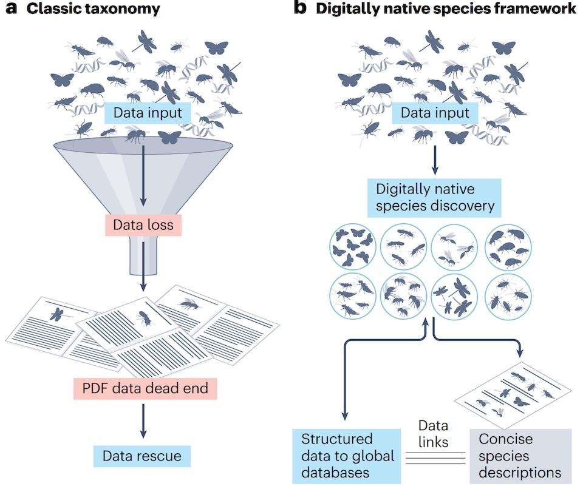

Digitally native species are a necessary shift in taxonomic practice
At Plazi, together with our collaborators Rudolf Meier and Amrita Srivathsan from the Center for Biodiversity Disovery at the Museum für Naturkunde Berlin, we are calling for a fundamental shift in how species are described and documented. In our latest article, we introduce the concept of “digitally native species,” a model that embeds taxonomic knowledge directly into structured, machine-actionable data systems from the very beginning.
Biodiversity science has long faced a paradox. While roughly 2.5 million accepted species have been described, we still know only a fraction of life on Earth. At the same time, much of the valuable data generated during species discovery is routinely lost. Observations from specimens—images, measurements, genetic data—often remain on personal devices or are reduced to minimal summaries in publications. These publications are typically locked in static formats such as PDFs, limiting their reuse in digital infrastructures.
From our perspective at Plazi, this is a critical bottleneck. For years, we have worked to liberate biodiversity data trapped in the scientific literature, applying FAIR (Findable, Accessible, Interoperable, Reusable) principles to millions of data objects. Through workflows that extract and structure data from legacy publications, we have shown that even deeply buried information can be made machine-readable and reusable.
However, retrospective data extraction is only part of the solution.
With digitally native species, we advocate moving upstream. Instead of rescuing data after publication, taxonomic workflows should be designed so that data are born digital, structured, and immediately reusable. In this model, species descriptions remain the domain of taxonomists, but publications become concise gateways to rich, specimen-level datasets stored in interoperable platforms with persistent identifiers.
Importantly, this shift does not increase the workload for researchers. The same types of data—images, sequences, measurements—are already being generated. What changes is when and how these data enter the scientific record, ensuring they are preserved, shareable and usable at scale.
This transition is increasingly urgent. Advances in high-throughput sequencing, automated imaging and artificial intelligence are transforming biodiversity research, enabling the rapid processing of vast numbers of specimens. Yet these technologies depend on structured, machine-actionable data. Without it, the full potential of modern biodiversity science cannot be realised.
Digitally native species also open the door to broader participation. Much of Earth’s biodiversity is found in regions with limited access to molecular infrastructure. By anchoring species in openly accessible, specimen-level evidence rather than costly publications, this approach can lower barriers and support global collaboration. It is also essential for emerging fields such as computable morphology, where high-resolution imaging data can complement or substitute genetic data.

From our experience, the tools and standards required for this transformation already exist. The success of initiatives such as the Biodiversity Literature Repository demonstrates that large-scale, FAIR data infrastructures are not only feasible but operational.
For us at Plazi, digitally native species represent the natural next step: shifting from rescuing data locked in PDFs to ensuring that biodiversity knowledge is never trapped there in the first place.
As biodiversity loss accelerates and data volumes grow, the challenge is no longer producing information, but ensuring it remains structured, persistent and reusable. Digitally native species provide a practical and necessary path forward.
Source: Meier R, Agosti, D, Srivathsan A (2026) Digitally native species are a necessary shift in taxonomic practice. Nat. Rev. Biodivers. doi: 10.1038/s44358-026-00156-y